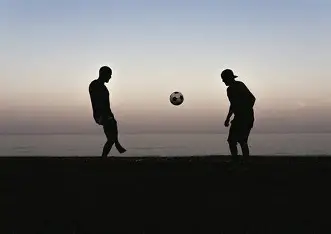
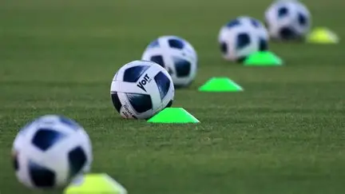

¿Por qué me apasiona?
El fútbol siento que es la fuente de mi disciplina por que no es solo patear un balón es el deporte que me enseña la importancia de la constancia y el respeto, tambien me enseña a nunca rendirme y que el esfuerzo y sacrificio de hoy vale la pena a futuro por que siempre tiene su recompensa. Me ayuda a forjar mi carácter y a valorar la importancia de cada integrante del equipo. Tambien me gusta por que aprendo a trabajar la mayor parte de veces en equipo y a confiar en mis compañeros.
Tiempo y Dedicación
El compromiso con el Futbol es parte de mi rutina semanal:
Horas semanales
y Partidos
Este tiempo es mi terapia personal, me permite despejar la mente, reducir el estrés de las tareas o de problemas en el hogar y mejorar mi condición física notablemente.
Crecimiento Personal
En el Futbol aprendi que la perseverancia, la disciplina y la constancia es la clave del éxito en la mayor parte de las cosas de la vida. Me ayudo tambien con la toma de decisiones bajo presión y el respeto por el rival son lecciones que aplico en todos los aspectos de mi vida diaria.

